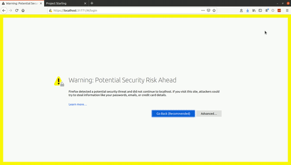

8. Multi-UAV flight with Kubernetes for container deployment¶
In this tutorial, we will introduce the idea of container deployment and why that fits into the goals of what Starling is trying to achieve. We will then show how to run the multi-drone cluster simulation environment for multi-drone local development and testing.
Now, I know what you might not be thinking at this point- "Oh yay, another layer of complexity to learn... grumble grumble" - but hold up! Container development is key to what sets Starling apart from other frameworks so it is important for you to understand how this works.
8.1 Kubernetes, Multi-UAV Flight and Integration Testing¶
It certainly is possible to conduct multi-UAV simulation testing with the Docker and Docker-Compose tools we already have (in fact we have a number here), but this runs into a problem: how do we transition from running our developed controller against a simulation, to developing, validating and testing a controller which will be deployed on real hardware?
Quick answer - we use container deployment to provide us not only with a physical representation of the BRL, but also a full software simulation of the systems we use in the BRL.
8.1.1 Multi-UAV Flight¶
A major problem with multi-UAV flight is scalability. Traditionally in drone applications, single vehicles are often flown by wire using a telemetry link from a ground computer or companion computer. This involved the manual configuration of networks and ports between different parts, as well as the manual loading of software onto the drones. On top of pinning the drone hardware to a particular application, repeating this process for multiple drones is both tedious and inefficient.
If vehicles could automatically set up their own environment, networking and ports, and accept software deployments, we could mitigate many of the above problems. That's where Starling comes in!
This whole approach is drawn from the observation that a modern drone is simply flying compute, and therefore a group of drones are analogous to a computation cluster. Compute clusters also have to deal with networking, software deployment, scalability and so on - and they have tools and systems to do this. In Starling, we apply similar tools to aid us in Multi-UAV flight.
8.1.2 Container Orchestration and Kubernetes¶
In a compute cluster, we often want to deploy our applications (preferably containerised) and run them on a specific dedicated machine. This could be because the application needs a GPU, or requires lots of storage or perhaps it doesnt need any of those and just need CPU time. Regardless, the container orchestrator is the one in charge of ensuring that applications are deployed to where they need to be.
In Starling, we make use of the popular Kubernetes open source orchestrator. It is Kubernetes (aka K8) job to deploy one or more groups of containers (a.k.a Pods) to one or more drones (a.k.a compute Nodes) within its cluster. Through doing this, it also manages the inter-vehicle network, scaling to more vehicles, vehicle failure and recovery, automatic connection on startup and many other features.
The below diagram shows this in action with the deployment of multiple containers on different vehicles, as well as other containers on the main cluster server machine offboard the vehicles. By default we have the following deployment 'rules' in place:
- Every 'vehicle' has the MAVROS container deployed to it.
- Every 'clover' (a type of UAV we are using) has the Clover Hardware Container deployed to it.
- Every 'multirotor' has the User's onboard controller deployed to it.
- The offboard, GUI and safety monitor are restricted to only be deployed on the 'master' node.
These deployment rules are applied through the use of Kubernetes configuration files which we will detail in the next tutorial.

There exists a well known NASA Mantra of `Test Like You Fly'. Therefore we have good reason to not just use Docker-Compose for all our testing:
- Docker-Compose is designed for running containers locally on one machine and has no capability for deployment, so it cannot be used on real vehicles.
- Kubernetes adds an extra layer of complexity which needs to be tested before deploying into the real world.
8.1.3 Integration Testing with KinD¶
Wrapping back round to testing your own controllers... how can we do reasonable integration testing if we need a compute cluster with multiple nodes? This is where containerisation comes back to the rescue! Specifically, we use the Kubernetes in Docker (KinD) to do ... Docker inside Docker testing!
Recall that a container simply encapsulates other programs. There is nothing stopping you from running more containers inside the existing container. KinD leverages this by spinning up a container for each simulated node in your cluster. These nodes are automatically connected together as if they were a compute cluster on real hardware.
KinD therefore has two types of container: a control plane and a worker. The control plane is the K8 server, and the workers are the nodes. Starling wraps KinD with automatic functionality which labels workers as UAVs, allowing existing deployments to function identically to the real world. The only addition is that in place of the real world, we have our Gazebo digital double simulator instead.
Crucially, the user interface between K8s on KinD is identical to that on the real vehicles. This means you can easily run deployments and networking as if you were in the real world. Voila! Integration testing!
8.2 Running the Multi-UAV Integration Testing Stack¶
Prerequisites: Getting Started
8.2.1 Installing KinD¶
If you have got this far, you will also need to install the kind utility. This can be done through the starling CLI:
starling install kind
8.2.2 Running the Multi-Drone Cluster¶
Start a cluster of 2 drones by running the following:
starling start kind -n 2
Once the cluster has started, we can start the general UAV simulator.
IMPORTANT: The simulator can potentially be resource heavy to run, w.r.t both CPU usage and RAM. Before going further, please ensure you have enough space on your primary drive (at least 30Gb to be safe - check your C drive on Windows). This is especially important if running multiple vehicles. We do not recommend you run more than 6 vehicles at a time.
IMPORTANT: On windows machines running WSL2, it has been noted that machines with 16GB RAM can potentially slow down or run out of memory. This is due to WSL2 taking up slightly too much memory. It is recommended that you reduce the amount of memory from 8Gb to 6 or 7Gb. In particular by modifying your
.wslconfigfile. See this guide
First, we should load or download the required simulation containers locally. We need to run the load command as we want to load the local container images into the KinD container. This saves the KinD containers from having to download the containers themselves during runtime. This is achieved by starting a local container registry (just like Docker Hub), loading our containers into there, and getting the KinD containers to look there first when looking for containers.
This command can take as long as 30 minutes depending on your internet connection. It goes through the deployment files and downloads a couple of large containers e.g. the
gazeboandsitlcontainers.If the container doesn't already exist locally, it will attempt to download it from Docker Hub
Note: The
--brloption automatically loads up the BRL flight arena simulated doubles
starling simulator load --brl
Once loading completes, you can then start the simulator using the start command:
starling simulator start --brl
# or both load and start at once
starling simulator start --brl --load
This should print the following output:
Starting simulator
Converting to use local registry at localhost:5001
deployment.apps/gazebo-v1 created
Converting to use local registry at localhost:5001
daemonset.apps/starling-px4-sitl-daemon created
Converting to use local registry at localhost:5001
daemonset.apps/starling-mavros-daemon created
With any luck, this should again open up the simulator on localhost:8080 (the page will be empty as the UI has not been started though).
8.2.3 Monitoring the cluster¶
A dashboard can be started to monitor the state of your current cluster.
starling start dashboard
This will start up the Kubernetes dashboard. To access the dashboard, open up a browser and go to http://localhost:31771.
Note the browser may grumble about the security but it is safe to access! Please click 'Advanced Options' and 'Continue to website' to proceed.
The above command should show something like the following:
The Dashboard is available at https://localhost:31771
You will need the dashboard token, to access it.
Copy and paste the token from below
-----BEGIN DASHBOARD TOKEN-----
<LONG TOKEN>
-----END DASHBOARD TOKEN-----
Note: your browser may not like the self signed ssl certificate, ignore and continue for now
To get the token yourself run: kubectl -n kubernetes-dashboard describe secret admin-user-token
You will need the <LONG TOKEN> to log in. Copy and paste it into the Dashboard token. To get the access token again, run:
starling utils get-dashboard-token

For a more specific tutorial on the dashboard go to this page in the starling docs!
This web dashboard shows the status of everything in the simulated cluster. It may look overwhelming, but in this tutorial, you'll only need to interact with a few of the elements. Opening the dashboard takes you firstly to the Workloads page. This gives you an overview of everything that is running. If it's green, you're all good!
You can see the nodes in the cluster by scrolling down on the left sidebar and clicking Nodes. Here we see the server (control plane) and 2 drones (workers).
On the right sidebar the pods button brings you to a list of all the groups of containers (pods) currently running on the cluster. We can see 1 Gazebo pod, 2 px4 and 2 mavros, representing two drones and a simulator.
Finally, you can click on any one of the pods to access that container's logs, as well as exec into them if you want to run stuff.
Navigate and have a look at the running pods. See if you recognise some of the printouts from when you just ran
docker-compose.Note: The dashboard is definitely overspecified for our needs, but it already existed and was a good resource. We have a upcoming project to building a similar, more customised replacement which better suits our needs.
Finally, for very quick diagnostics, you can also monitor the system using:
$ starling status
# or to continually watch
$ starling status --watch
Number of vehicles: 2
Nodes:
NAME STATUS ROLES AGE VERSION
starling-cluster-control-plane Ready control-plane,master 38m v1.21.1
starling-cluster-worker Ready <none> 38m v1.21.1
starling-cluster-worker2 Ready <none> 38m v1.21.1
Pods:
NAME READY STATUS RESTARTS AGE
gazebo-v1-59d58485d8-pnt2g 1/1 Running 0 25m
starling-mavros-daemon-cqjhr 1/1 Running 0 25m
starling-mavros-daemon-nmptj 1/1 Running 0 25m
starling-px4-sitl-daemon-fllq5 1/1 Running 0 25m
starling-px4-sitl-daemon-gfxqs 1/1 Running 0 25m
Deployments:
NAME READY UP-TO-DATE AVAILABLE AGE
gazebo-v1 1/1 1 1 25m
StatefulSets:
No resources found in default namespace.
DaemonSets
NAME DESIRED CURRENT READY UP-TO-DATE AVAILABLE NODE SELECTOR AGE
starling-mavros-daemon 2 2 2 2 2 starling.dev/type=vehicle 25m
starling-px4-sitl-daemon 2 2 2 2 2 starling.dev/type=vehicle 25m
8.2.4 Restarting on Stopping the Simulator¶
To recap, there are two parts to our Starling integration test simulator. There is the cluster, and then there is our UAV simulation running within the cluster.
If the UAV simulation seems broken or you have put it in an unrecoverable state, you can restart the UAV simulation without deleting the cluster by running the restart command on the simulator:
starling simulator restart --brl
Note: This will stop the simulator by deleting all deployments within the cluster, and then restart. You can remove all deployments using
starling simulator stop.Note: Don't forget to include the
--brlso it knows what to start up again.
If you have finished testing for the day, something fundamental to the cluster has gone wrong (e.g. failed to connect to ports, networking etc), or you wish to change the number of drones in your cluster, you can stop and delete the cluster and everything in it by running:
starling stop kind
Note: This will remove all of the loaded internal images again, so you will need to load them in next time you start the cluster (alternatively, you can keep them by adding the argument
--keep_registry).Note: You will have to start everything up again after restarting - the dashboard, loading images, starting the brl simulator.
8.3 Next Steps¶
Good job on getting to the end! This is one of the denser sections in this tutorial. Hopefully you now have a basic understanding on why Starling goes to the complexity of using Kubernetes and the benefits it can bring. In addition, you have learnt what KinD is, and why and how we use it in conjunction with the Starling CLI for integration testing.
Now you know how the integration test stack can be run, it's time to get your controllers in and see how they work with multiple vehicles!